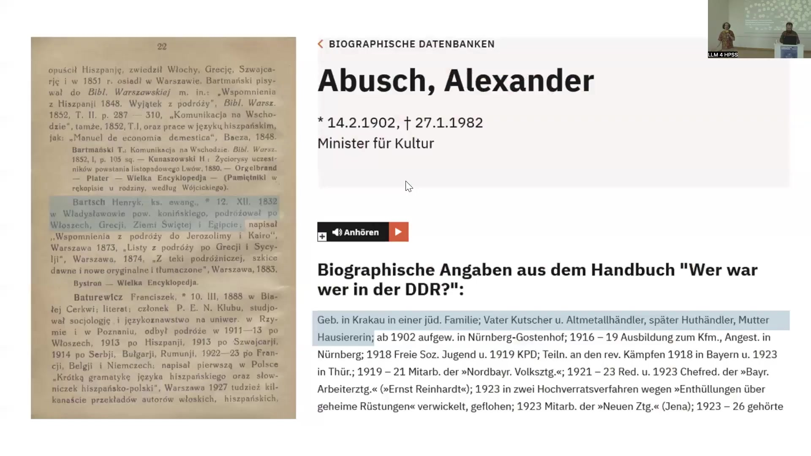
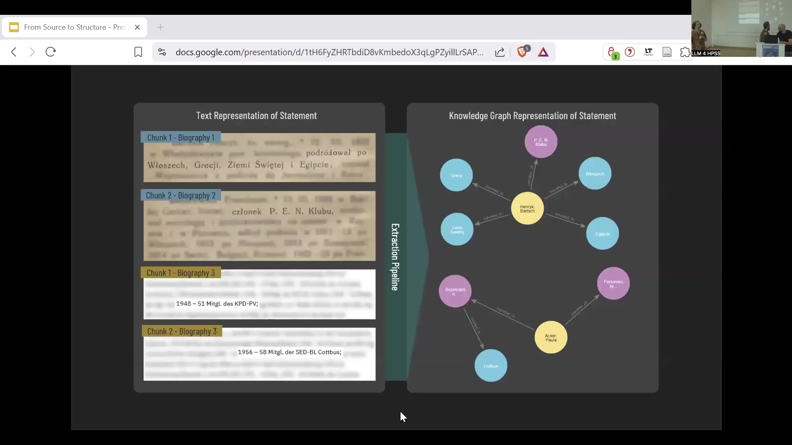
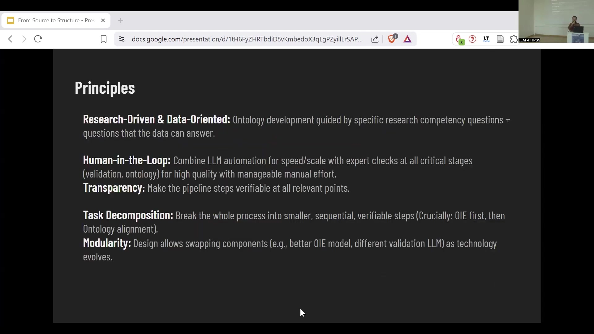
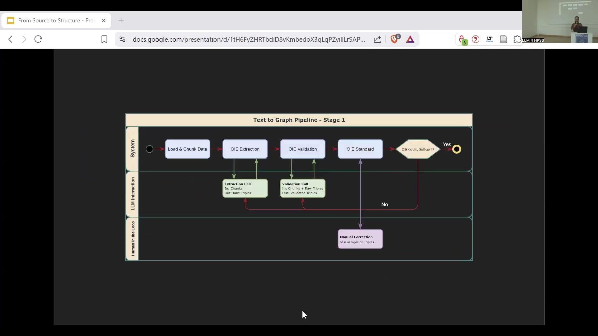
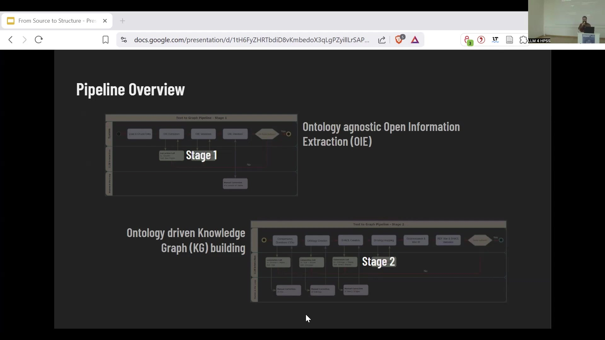
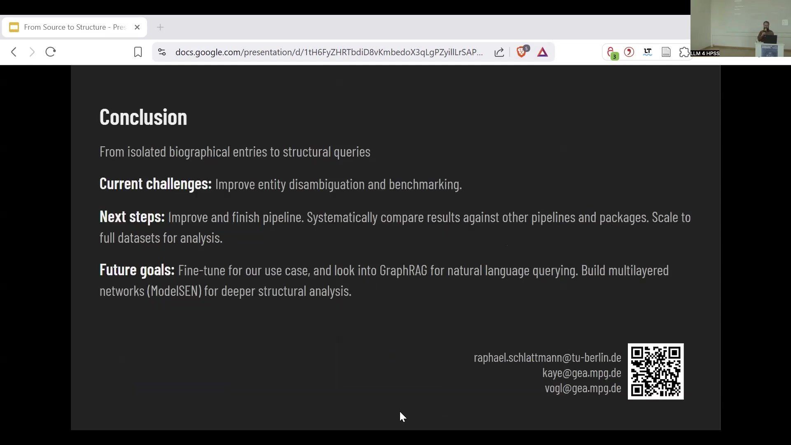
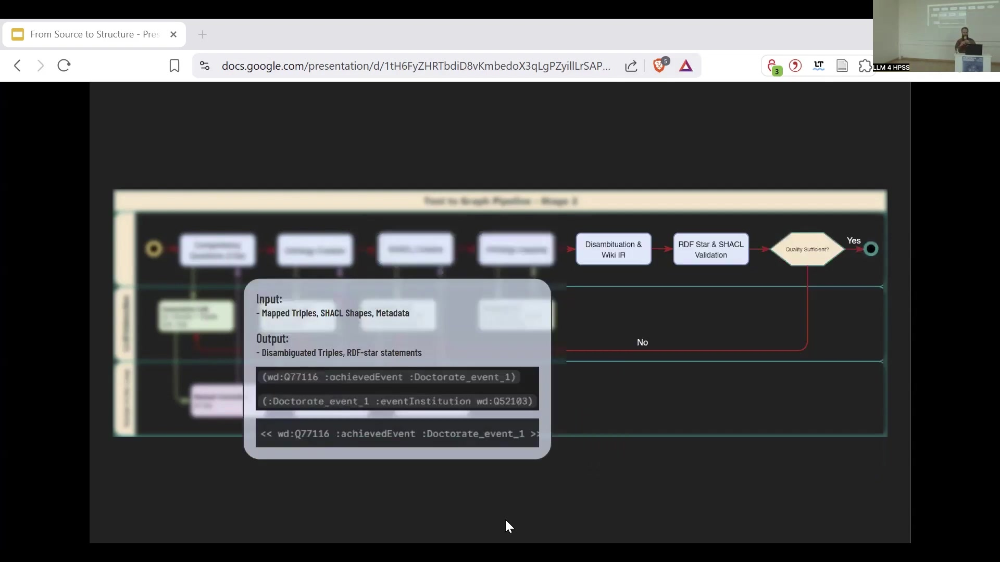

19 From Source to Structure: Extracting Knowledge Graphs with LLMs
Overview
Researchers Malte Vogl, Raphael Schlattmann, and Alex Kaye confront the formidable challenge of extracting structured knowledge from historically significant, yet computationally intractable, unstructured biographical sources. Their pioneering work introduces a novel method to transform such materials—typically printed books or dictionaries—into readily queryable knowledge graphs.
This innovative approach transcends the conventional reliance on pre-structured datasets, prevalent within History and Philosophy of Science (HPSS). Instead, it strategically employs Large Language Models (LLMs) not as infallible oracles, but as integral components within a meticulously engineered pipeline. The primary objective involves imposing rigorous structure upon unstructured data, such as Polish and German biographical dictionaries, thereby facilitating complex historical inquiries. These investigations might, for instance, explore the formation of intellectual networks or trace the evolution of professional connections over time.
The team expertly utilises tools like Neo4j for graph representation, having developed a sophisticated multi-stage pipeline that incorporates crucial human oversight to ensure both accuracy and relevance. Ultimately, this methodology enables the construction of controllable knowledge graphs, where entities—individuals, locations, organisations, and publications—become distinct nodes, and their interconnections, meticulously derived from textual evidence, form the relational edges.
19.1 Transforming Unstructured Biographical Data into Queryable Knowledge Graphs

Researchers confront a significant challenge in historical studies: many invaluable biographical sources persist in unstructured textual formats, such as printed dictionaries and compendia. Whilst existing History and Philosophy of Science (HPSS) datasets often comprise structured information—for instance, publication databases or email archives—these unstructured materials, despite their rich detail, resist computational analysis. Consequently, this project pioneers a methodology to systematically impose structure upon such data, specifically targeting biographical entries. The core idea leverages Large Language Models (LLMs), not as standalone solutions, but as crucial components within a larger, controllable pipeline engineered to construct knowledge graphs.
Historically, tools like Get Grass facilitated access to printed materials for digitisation. The current approach, however, aims for a deeper level of structuration. It conceptualises biographical information as a knowledge graph: a network where entities—individuals, geographical locations, countries, published works, or organisations—constitute the nodes. The relationships between these entities, as described in the source texts, form the connecting edges. Such a graph, once constructed, permits complex, structured queries. For instance, one might investigate how professional networks evolved within a specific discipline during a particular era, or trace the contacts an individual established over their career.
The team employs LLMs selectively, focusing on their utility for specific tasks within a broader information processing chain, rather than pursuing an elusive ‘perfect’ model. Source materials include Polish biographical collections and German-language resources such as the handbook Wer war wer in der DDR? Ein Lexikon ostdeutscher Biographien. An entry from the latter, for Alexander Abusch, might detail his role as Minister für Kultur alongside birth and death dates. An extraction pipeline processes these text-based entries, often derived from scanned documents, transforming them into a visual and queryable graph, potentially managed in a system like Neo4j. This process thus converts isolated, albeit information-dense, textual accounts into a connected, structured dataset ripe for scholarly exploration.
19.2 Illustrative Extraction: Structuring Polish Biographical Entries

To illustrate the extraction methodology, consider a Polish biographical entry for Bartsch Henryk, an evangelical priest (ks. ewang.). The text records his birth on 12th December 1832 in Wladyslawowo, situated within the Konin district. Furthermore, it details his extensive travels to Italy (Włochy), Greece (Grecja), the Holy Land (Ziemia Święta), and Egypt (Egipt). His scholarly contributions encompass several publications: Wspomnienia z podróży do Jerozolimy i Kairo (Warsaw, 1873), Listy z podróży po Grecji i Sycylji (Warsaw, 1874), and Z teki podróżniczej, szkice dawne i nowe oryginalne i tłumaczone (Warsaw, 1883). The entry itself cites Bystron’s Wielka Encyklopedja as a source.
From this concise textual snippet, the system extracts key entities and their relationships. ‘Bartsch Henryk’ is identified as a PERSON, his ROLE as ‘ks. ewang.’, his birthdate as ‘12. XII. 1832’ (a DATE), and ‘Wladyslawowo’ along with the countries he visited as LOCATIONs. Relationships such as ‘born on’, ‘born in’, ‘located in’, and ‘travelled to’ link these entities. Consequently, this process yields a set of structured triples: (Bartsch Henryk, is a, ks. ewang.), (Bartsch Henryk, travelled to, Włochy), and so forth, effectively translating narrative information into a machine-readable format suitable for knowledge graph construction.
19.3 Pipeline Architecture and Guiding Principles for Knowledge Extraction

Engineers have designed a sophisticated two-stage pipeline to transform raw textual data into structured knowledge graphs. This architecture systematically processes information, integrating both automated techniques and human expertise. The first stage, ‘Ontology-agnostic Open Information Extraction’ (OIE), focuses on identifying factual statements. It commences by loading and chunking the source data, then proceeds to OIE extraction, validates these extractions, and standardises them against benchmarks. A critical quality control checkpoint determines the sufficiency of the OIE output; insufficient output triggers a manual correction loop for a sample of triples.
Subsequently, the second stage, ‘Ontology-driven Knowledge Graph (KG) building’, refines and structures this information. This stage commences by formulating Competency Questions (CQs) that define the KG’s desired analytical capabilities. Based on these CQs, developers create an ontology and define SHACL (Shapes Constraint Language) shapes for validation. The pipeline then maps the extracted triples to this ontology, disambiguates entities (potentially linking them to Wikidata IDs), represents the data using RDF-star, and subsequently performs SHACL validation. Similar to Stage 1, a quality control loop allows for manual correction of CQs, the ontology, or SHACL shapes if necessary. Both stages integrate layers for LLM interaction and crucial ‘Human in the Loop’ interventions, ensuring robust and reliable outcomes.
Several core principles underpin this pipeline’s design. It is fundamentally research-driven and data-oriented; thus, ontology development directly addresses specific research questions and aligns with the data’s realistic provisions. The human-in-the-loop paradigm strategically combines LLM automation for efficiency with expert oversight at all critical junctures, balancing scale with quality. Transparency is paramount; researchers design each step for verifiability. Furthermore, task decomposition breaks the complex process into manageable, sequential units—notably performing OIE before aligning with an ontology. Finally, modularity ensures the system can adapt, allowing for the integration of improved models or components as technology evolves.
19.4 Stage 1 Workflow: Open Information Extraction in Detail

The initial stage of the pipeline, Open Information Extraction (OIE), meticulously processes raw biographical texts to identify factual assertions. It commences by loading and chunking data: the system ingests pre-processed files containing biographical narratives and segments them into manageable units. This step yields semi-structured data, often organised tabularly, with each row corresponding to a text chunk and including identifiers such as name, role, the biographical snippet itself, and a unique chunk ID.
Following this preparation, OIE extraction commences. For each chunk—comprising, for example, a person’s name such as ‘Havemann, Robert’ and a segment of their biography like ‘… 1935 Prom. mit … an der Univ. Berlin…’—the system attempts to extract factual statements. This process generates raw Subject-Predicate-Object (SPO) triples, enriched with pertinent metadata such as an associated timeframe and a confidence score indicating the extraction’s reliability.
Subsequently, OIE validation scrutinises these raw triples. The original text chunk and its corresponding extracted triples serve as input. Human experts, or potentially other specialised LLMs, then assess the accuracy and relevance of each triple against the source text. This critical review produces a set of validated SPO triples. Finally, the OIE Standard step evaluates the overall quality of this extraction phase. Researchers compare the validated triples against a ‘Gold Standard’—a reference set of triples meticulously created or verified by domain experts. This comparison yields key performance indicators such as F1-score, Precision, and Recall, offering a quantitative measure of the OIE process’s success.
19.5 Stage 2 Workflow: Ontology-Driven Knowledge Graph Construction in Detail

The second stage of the pipeline focuses on building the knowledge graph in an ontology-driven manner, ensuring the final structure aligns precisely with research objectives. This stage commences by formulating Competency Questions (CQs). Drawing upon a sample of validated triples from Stage 1, experts define the specific analytical questions the knowledge graph must be capable of answering. This process yields a set of manually refined CQs that guide subsequent development.
Next, developers create the ontology. Using the CQs and the sample of validated triples as inputs, they design a formal ontology. This ontology specifies the classes of entities (e.g., Person, Organisation, Event), the properties these entities can possess, and the types of relationships that can exist between them, all meticulously tailored to address the CQs. This process yields a comprehensive Ontology Definition.
With the ontology established, ontology mapping commences. The pipeline processes the validated triples from Stage 1, mapping their constituent subjects, predicates, and objects to the corresponding classes and properties within the defined ontology. This step transforms the relatively raw triples into conceptual RDF (Resource Description Framework) statements. Finally, disambiguation and Wikidata ID linking refine the graph. This crucial step involves resolving ambiguities in entity references—for instance, ensuring that different individuals sharing the same name are correctly distinguished. The system links entities to external identifiers, such as Wikidata IDs, where feasible. This phase also incorporates RDF-star statement generation, allowing annotations or contextual information to attach directly to individual triples, thereby enriching the graph’s expressive power. This process yields a set of disambiguated triples and RDF-star statements, ready for SHACL validation and subsequent querying.
19.6 Application Case Study: Analysing Zieliński’s Polish Biographical Compilations

Researchers applied the knowledge graph extraction pipeline to a set of significant Polish historical sources: three complementary compilations by Stanisław Zieliński. These encompass Mały słownik pionierów polskich kolonjalnych i morskich (1933), a biographical dictionary of colonial and maritime pioneers; Bibljografja czasopism polskich zagranicą, 1830-1934 (1935), a bibliography of Polish periodicals published abroad; and Wybitne czyny Polaków na obczyźnie (1935), a record of notable Polish achievements internationally.
The structured data extracted from these volumes enables the exploration of several nuanced research questions. For instance, the knowledge graph facilitates the identification of individuals or communities whose pivotal roles in developing ideas and practices might have been obscured by dominant historical narratives. It allows for an analysis of shifts in migration patterns, such as those occurring before and after the January Uprising of 1863. Furthermore, investigators can examine the function of specific journals, determining if they served as ‘boundary objects’ linking diverse intellectual or professional circles, or which publications proved most central to the communities of practice amongst Polish migrants.
Initial analysis of the Zieliński data yielded a substantial social network graph containing 3,598 nodes and 5,443 edges. Visualisations of this network distinguish editors (coloured green) from other individuals (coloured pink), offering a preliminary glimpse into the relational structures embedded within these historical texts.
19.7 Application Case Study: Exploring East German Biographies from “Wer war wer in der DDR?”

Another significant application of the extraction methodology involves the German biographical lexicon, Wer war wer in der DDR? Ein Lexikon ostdeutscher Biographien. This extensive work, first published in the 1980s by the Bundesstiftung zur Aufarbeitung der SED-Diktatur and subsequently digitised in the 2000s, profiles approximately 4,000 prominent East German figures from diverse fields including politics, science, culture, and sports. Containing entries for individuals such as Gustav Hertz and Robert Havemann, it serves as an indispensable resource for researchers and journalists seeking to understand the complex legacy of the German Democratic Republic.
The structured data derived from this lexicon enables quantitative analyses of historical patterns. One such analysis, visually presented as a scatter plot, investigates the relationship between state award recipients, high-ranking positions, and affiliation with the Socialist Unity Party (SED). The plot maps individuals based on their award status (e.g., Karl-Marx-Orden, Nationalpreis der DDR) against their rate of holding high positions and their SED affiliation rate. Comparative statistics reveal striking correlations: for instance, 95.0% of the 38 Karl-Marx-Orden recipients were SED members, compared to only 38.5% of the 1,056 individuals in the sample without this award. Recipients of the Karl-Marx-Orden also held a significantly higher share of high positions (65.8%) compared to those with no awards (28.0%), and an average birth year of 1905.9, substantially earlier than the 1923.0 average for non-recipients. Further detailed breakdowns show that 100% of Karl-Marx-Orden recipients who held Politbüro positions were members, highlighting the award’s strong ties to the highest echelons of power.
19.8 Achievements, Current Challenges, and Future Trajectories

The project has successfully demonstrated a significant advancement: the transformation of isolated biographical entries into a resource capable of supporting complex structural queries. This marks a crucial step towards unlocking the rich, latent information within historical texts. Nevertheless, researchers identify ongoing challenges, primarily in refining entity disambiguation techniques to ensure greater accuracy and in enhancing benchmarking methodologies to rigorously assess pipeline performance.
Looking ahead, researchers will immediately complete and finalise the current pipeline’s development. Subsequently, a systematic comparison of its outputs against alternative pipelines and existing software packages will provide valuable performance context. A key objective involves scaling the entire process to analyse full datasets, thereby enabling more comprehensive historical investigations.
Beyond these immediate goals, future ambitions include fine-tuning the pipeline for highly specific research use cases. The team also plans to explore the potential of GraphRAG (Graph Retrieval Augmented Generation), which could allow users to query the knowledge graphs using natural language. Furthermore, the team expresses interest in constructing multilayered networks, possibly employing frameworks such as ModelSEN (Multilayer Social-Epistemic Networks), to facilitate even deeper structural analyses of the complex relationships within the historical data. Interested parties may contact Raphael Schlattmann, Alex Kaye, or Malte Vogl via their provided email addresses.